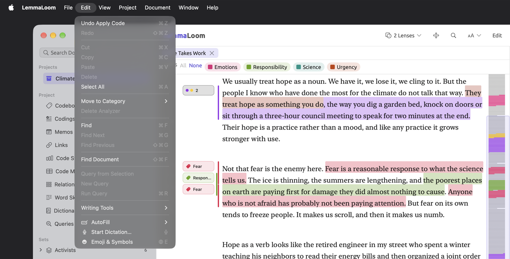
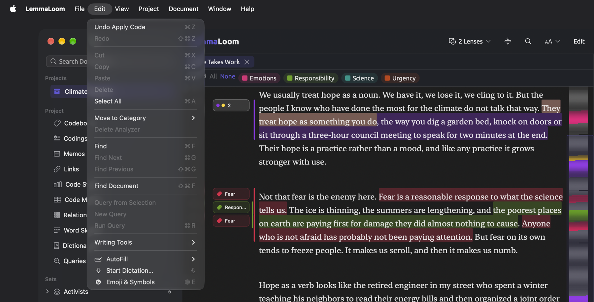
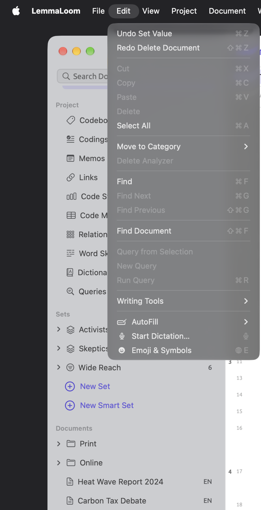
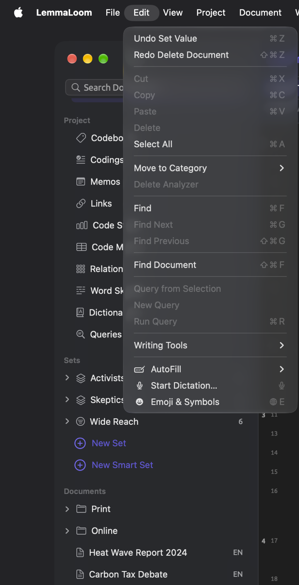
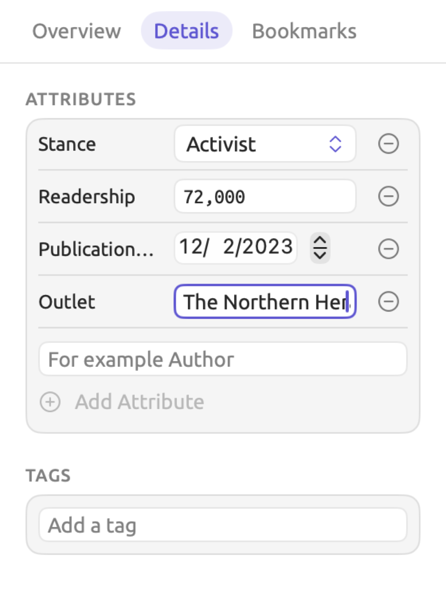
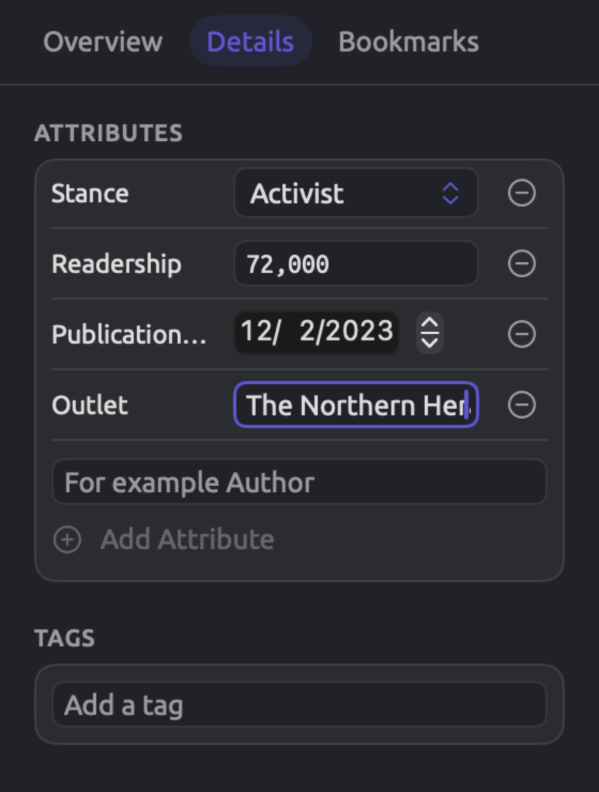
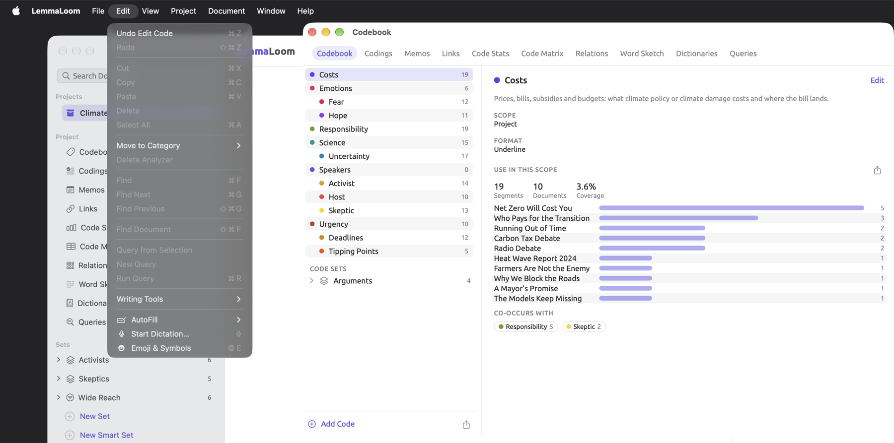
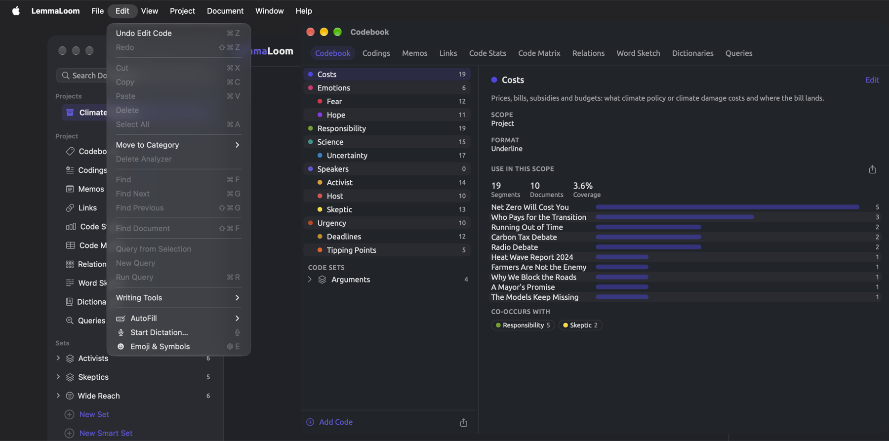

Undo and Redo
Changes made via LemmaLoom are immediately saved upon making the modification, and the history of said modifications is tracked accordingly. Undoing these changes can be done via Edit ▸ Undo, one at a time, working backwards through the history in reverse chronological order until the desired point has been reached. Pretty much everything within a project may be undone, including the deletion of documents and auto-coding a whole set of documents.
In cases involving the deletion of a project, document, or code, or the merging of two codes, LemmaLoom asks for confirmation. Most other things (such as groups, sets, tags, attributes, dictionaries, and analyzers) are deleted instantly without prompting. Accidental deletions can be reverted using Edit ▸ Undo.
Projects are deleted permanently, while importing and/or translating documents erases portions of the history. What cannot be undone outlines these instances further down in this chapter.
This guide’s examples use “Climate Debate”, which is explained fully in The example project in Chapter 1, Introduction. For practice purposes, the project may be imported with File ▸ Import ▸ Example Project.
Key terms
- A step is one instance of an action captured by LemmaLoom. Its name, which the Edit menu shows, identifies which command caused the change; examples include Apply Code and Delete Document. A single coding constitutes one step, while running Auto Code (see Coding passages automatically in Chapter 7, Coding) to create two hundred codings and four new codes also counts as one step.
- Undo history refers to all steps available for undoing changes. Every individual window maintains its own separate undo history (see Which window a step belongs to later on in this chapter).
Undoing a change
- Click the window where you made the change, so that it is the active window. For most changes, this is the main window.
- If the cursor is in a text field, click outside it.
- Open the Edit menu. The first item names the step that will be undone, for example Undo Apply Code.
- Choose the item, or press ⌘Z.


If you wish to take multiple steps back in history, select Undo from the menu again. Every successive selection will reveal what the name of the next step is in history. Pressing ⌘Z quickly several times will reverse those actions sequentially. Once nothing remains to undo, the command changes its name to Undo, and the interface disables it.
An Undo reverts all elements affected by the particular action. This means that, when performing Undo Delete Document, the document returns, including all the text, codings, memos, links, bookmarks, attribute values, and place in every set.
When undoing results in the restoration of text content, LemmaLoom will index the text content again in the background (see Indexing a document again in Chapter 21, Analysis and Indexing). See Window ▸ Activity (⌥⌘0) to track the indexing progress.
Redoing a change
When you undo something, there will always be an option in the Edit menu to redo what was done, like Redo Apply Code. Click this menu option, or hit ⇧⌘Z on your keyboard. You can redo as many actions as you undid, starting from the last undone action.
Your redo options persist only until you make another change in the same window. If, for instance, you code another passage, you lose the steps you undid for good, and Redo is disabled.


An example
Say you’re working on “Hope Takes Work” in the main window. You’ve coded a passage with “Fear”. In the Details facet of the inspector’s Text tab, you’ve changed the “Outlet” attribute of the essay from “The Weekly Ledger” to The Northern Herald. Finally, you deleted “Carbon Tax Debate”. This table outlines what options appear in the Edit menu after each action, and after the undos and redos that follow.


| No. | What you do | Undo item | Redo item |
|---|---|---|---|
| 1 | Code a passage with “Fear” | Undo Apply Code | Redo (disabled) |
| 2 | Select “The Weekly Ledger” in the “Outlet” field, type The Northern Herald, then click in the reader | Undo Set Value | Redo (disabled) |
| 3 | Delete “Carbon Tax Debate” | Undo Delete Document | Redo (disabled) |
| 4 | Press ⌘Z | Undo Set Value | Redo Delete Document |
| 5 | Press ⌘Z | Undo Apply Code | Redo Set Value |
| 6 | Press ⇧⌘Z | Undo Set Value | Redo Delete Document |
| 7 | Code another passage with “Hope” | Undo Apply Code | Redo (disabled) |
“Carbon Tax Debate” makes a return to the project following row 4. Following row 5, “Outlet” becomes “The Weekly Ledger”, while The Northern Herald returns via row 6. Since row 7’s coding is new, Redo is disabled, and “Carbon Tax Debate” remains within the project.
Row 2 consists of just one step despite your entering 19 characters. The reason is covered below in Values typed into attribute fields.
How changes become steps
Each command counts as one step, however much it changes. For example:
- Delete Documents with six documents selected counts as one step. Likewise, deleting “Running Out of Time” will delete “Running Out of Time (German)” in the same step, since the latter is a translation of the former.
- Similarly, Save within Document Properties counts as one step, regardless of how many of the document’s properties (such as name, tags, attribute values, or language) you changed.
- An Auto Code run counts as one step; Undo will reverse any codings added during the execution of that command and also delete any codes created by the command. If you click Stop before the command completes execution, Undo will reverse everything performed until that point.
- Similarly, Bookmark Hits… and Add to Dictionary found in a query’s Actions menu, and Import in the Attributes window, each count as one step each time they are invoked, applying to all items they generate.
Undoing a command also reverses changes it made elsewhere. When coding a passage in “Running Out of Time”, LemmaLoom performs the equivalent coding on “Running Out of Time (German)”. Undoing Apply Code reverses the changes in both documents.
Values typed into attribute fields
Text attribute field contents in the Details facet of the inspector’s Text tab and in the Attributes window are autosaved as you type into them, while non-text contents are autosaved as soon as they are entered. LemmaLoom organizes all changes made to the same field within a given document as part of a single Set Value step, provided no other step comes between them.
Typing The Northern Herald into “Outlet” creates a single step that Edit ▸ Undo Set Value will reverse to restore its initial state prior to entering your text. Changing “Stance” creates another step. Finishing where you started (for example, typing something and deleting it) removes the entire step from the history. This applies also to attribute field values of codings and memos, found within the Codings facet of the inspector’s Coding tab.
To undo the whole value at once, click elsewhere first, then choose Edit ▸ Undo Set Value.
Changes that take a while
Deleting multiple documents, auto-coding a set, and importing a codebook take some time. Your current step is only displayed in the Edit menu after it has completed. Until it finishes, ⌘Z will undo the previous step. Before performing an undo action, make sure that the last deleted document has left the navigation sidebar, that the Auto Code dialog displays Done, or that the Importing REFI-QDA Codebook dialog is closed.
Which window a step belongs to
Each window in LemmaLoom maintains a history. This applies to your main window, your Codebook window, your Document window (from Open in New Window), and any Queries, Query Results, Analyzers, Tags, and Attributes window you might be working on. When creating a new instance of the main window via File ▸ New Window, you’ll end up with yet another separate history to track changes. Commands such as Edit ▸ Undo and Edit ▸ Redo are confined to the currently active window.
- A step belongs to the window that was active when the change began. After renaming the tag “viral” in the Tags window, click the Tags window before choosing Edit ▸ Undo Rename Tag.
- Changes that occur in response to actions initiated from a dialog belong to the window the dialog opened from. Your Document Properties dialog keeps its changes in history within the main window; reverse those changes with Edit ▸ Undo inside the main window once the dialog has closed. The code palette, similarly, keeps its changes in history in whatever window you opened it from. Any dialogs opened from the Attributes window keep their changes in history in that window.
- Background operations belong to the window they originated from regardless of which window is active upon completion. Initiating an Auto Code run in the main window means that it would be placed in the history of the main window.
- The history in your main window covers all of your projects. Once you’ve coded a passage within “Climate Debate”, then switched projects, and pressed ⌘Z, the coding is undone in your initial project while the second project stays active. If you wish to observe your undone changes, switch back first.


What can be undone
For every table, the rightmost column will contain the name after Undo or Redo in the Edit menu.
Codes and coding
| What you do | Step |
|---|---|
| Code a passage, including the values asked for by a code with attributes | Apply Code |
| Create a code and code the passage with it in one go, with Add Code “…” or In Vivo “…” in the code palette, or with Document ▸ In Vivo Code | Apply Code |
| Remove a coding in the code palette, or with Delete Coding in the Codings facet or the Codings view | Delete Coding |
| Give a coding another code with Change Code | Change Code |
| Create a code, including Add Subcode in the Codebook window and in the Codes facet | New Code |
| Change a code’s Name, Color, Format, Scope, Tags, Attributes, or About | Edit Code |
| Move a code under another code or to the top level, by dragging it or with Move To | Move Code |
| Merge Into another code | Merge |
| Delete a code | Delete Code |
| Add to Code Set ▸ New Set from Code | New Code Set |
| Add to Code Set | Add to Code Set |
| Remove from Code Set | Remove from Code Set |
| Rename a code set | Rename |
| Delete a code set, with Delete in its shortcut menu or its trash button in the Codes facet | Delete Code Set |
| Auto Code… from a lens or a query | Auto Code |
| File ▸ Import ▸ REFI-QDA Codebook | REFI-QDA Codebook |
Undoing Delete Code restores the code itself, including all of its subcodes, their codings, and associated attribute values. Undo Merge splits the merge, restoring the merged code with all of its codings, subcodes, memos, code sets, and saved queries related to it.
Undo REFI-QDA Codebook removes everything the import added to the codebook (see REFI-QDA codebooks in Chapter 22, Exchanging and Exporting).
Memos, links, and bookmarks
| What you do | Step |
|---|---|
| Write a memo | New Memo |
| Change a memo’s text, code, tags, or attribute values | Edit Memo |
| Delete a memo | Delete Memo |
| Link two passages | New Link |
| Change a link’s relation, comment, color, or tags | Edit Link |
| Delete a link | Delete Link |
| Bookmark a passage | Bookmark |
| Change a bookmark’s comment or color | Edit Bookmark |
| Remove a bookmark | Remove Bookmark |
| Bookmark Hits… in a query’s Actions menu | Bookmark Hits |
LemmaLoom replicates your memos, links, and bookmarks in the translations of your documents. Since the copies occur in the same step as the originals, the undo function works on both simultaneously.
Projects and documents
| What you do | Step |
|---|---|
| File ▸ New Project | New Project |
| Rename a project, document, group, or set | Rename |
| Save in Project Properties, including attributes added or removed there | Project Properties |
| Save in Document Properties | Document Properties |
| Change a document’s tags in the Details facet of the inspector’s Text tab | Edit Tags |
| Save after editing a document’s text | Edit Text |
| Delete Document | Delete Document |
| Delete Documents with several documents selected | Delete Documents |
| File ▸ New Group, or Move to Group ▸ New Group | New Group |
| Move to Group | Move to Group |
| Delete Group | Delete Group |
| The trash button (Remove Output) beside an analyzer in Document Properties | Remove Output |
| Run for an analyzer whose output you removed | Run |
| Index Now, in Document Properties or the reader’s status bar, for a document imported without indexing | Index Now |
File ▸ New Group makes two steps, New Group, followed by Rename when you enter the name and hit Return. To remove the group, use Undo twice, or Undo once if you used the default name because there would then only be one step to undo. Move to Group ▸ New Group and New Set in the sidebar follow the same procedure.
Deletion of the group leaves the documents inside the project, without any grouping. After Undo Delete Group, the documents become part of the re-instated group, with smart set conditions that referred to the group’s name restored.
After undoing Delete Document or Delete Documents, each document gets restored along with its translations and media file (see Deleting documents in Chapter 3, Projects and Documents). All codes whose scope was the document are re-added, and queries saved inside the document, having been moved during deletion to the project level, go back to the document. If there were pending translations scheduled for a document, deleting that document stops that process; after undoing the deletion, start the translation again.
Undo Edit Text restores the prior text, along with every coding, memo, bookmark, and link in the location they were found before. For recordings, timing of transcripts gets restored, as well as alignments for documents containing translations.
For more detail on this topic, refer to Undoing an edit in Chapter 5, Reading and Editing.
Undone changes made in Document Properties affecting the language and/or Exclude from indexing patterns cause indexing to take place. Undo Remove Output does the same, allowing the analyzer to run on the document again. Undo Run causes deletion of the analyzer’s output, while Undo Index Now turns indexing off again for the document (see Choosing analyzers for a document in Chapter 21, Analysis and Indexing).
Sets, tags, and attributes
| What you do | Step |
|---|---|
| New Set in the sidebar, or Create Set from Hits in a query | New Set |
| Add to Set | Add to Set |
| Remove from Set | Remove from Set |
| Delete Set | Delete Set |
| New Smart Set, or Save as Smart Set in a query | New Smart Set |
| Change a smart set’s conditions with Edit or Project ▸ Edit Smart Set | Edit Smart Set |
| Rename a tag in the Tags window or the sidebar | Rename Tag |
| Delete a tag in the Tags window or the sidebar | Delete Tag |
| Add Attribute in the Attributes window, or a new attribute name in the Details facet of the inspector’s Text tab | Add Attribute |
| Change an attribute’s name, type, choices, or description with Edit, in the Manage menu of the Attributes window or beside a code’s attribute in the code editor | Edit Attribute |
| Move Left or Move Right in the Manage menu | Move Attribute |
| Delete in the Manage menu | Delete Attribute |
| Enter, change, or clear a value, for one document or with Set Value for several | Set Value |
| Import in the Attributes window | Import Attributes |
Undo Delete Set returns not only the set itself, including any condition in case of a smart set, but also every query associated with it as well.
A tag is shared by every project that you’ve got, which means that the actions Rename Tag and Delete Tag affect every project, document, code, memo, link, and condition for a smart set that uses the tag. When undoing Rename Tag, the tag gets its previous name back everywhere it appeared, and a tab open on the tag follows the name back. Undo Delete Tag puts the tag back on everything that carried it, but a tab that closed when you deleted the tag stays closed.
Should an Edit Attribute step involve changes of the attribute type, then undoing it will restore all values converted by LemmaLoom too. An attribute you delete from either Project Properties or the Attributes window returns along with its value everywhere it belonged before deletion. Undo Import Attributes will take back every value the import wrote and every attribute it created.
Queries, dictionaries, and analyzers
| What you do | Step |
|---|---|
| Save or Save As… a query, or save a new query as a lens | Save Query |
| Rename… a saved query | Rename |
| Save as Lens… for a saved query | Save as Lens |
| Remove Lens | Remove Lens |
| Delete Query | Delete Query |
| New Dictionary | New Dictionary |
| Rename a dictionary or a category | Rename |
| Delete Dictionary | Delete Dictionary |
| Add Category | Add Category |
| Change a category’s color | Edit Category |
| Delete Category | Delete Category |
| Add terms in the Add term field, or with Add to Dictionary in the reader’s selection bar or a query’s Actions menu | Add to Dictionary |
| Remove terms | Remove Term or Remove Terms |
| Move terms to another category, by dragging them or with Move to Category | Move Terms |
| Save for a new analyzer in Window ▸ Analyzers, or Save as Analyzer… in a query | Add Analyzer |
| Save for an existing analyzer, or Save as Analyzer… for a query that already has one | Edit Analyzer |
| Delete an analyzer | Delete Analyzer |
| Update Analyzer | Update Analyzer |
Any changes you have made to a query via the builder are reflected upon saving the query (refer to Saving queries in Chapter 15, Building a Query). Opening either a saved query or a recipe, or choosing New Query, replaces the current state of your query. Should there have been any changes since your last save, you can retrieve these via Edit ▸ Undo; the Undo item names the query or recipe you opened, or reads Undo New Query. Additionally, selecting Freeze Values on the query’s Actions menu replaces your current query as well. This is undone with Undo Freeze Values regardless of whether the query had any unsaved changes made prior.
Choosing Save as Lens… on a saved query which had unsaved changes will save them first as a separate Save Query step before moving on to saving as a lens; thus undoing twice takes back both.
When changes made to an analyzer’s script or languages, or even its deletion, are undone, the analyzer is rerun against the documents in its languages.
For additional information about analyzers, refer to Chapter 20, Custom Analyzers.
What cannot be undone
Deleting a project
Deleting a project is a final action, and it also removes the steps regarding the project, its documents, or attributes from every window’s history. If you need a backup copy you could restore, export the project first with File ▸ Export ▸ LemmaLoom Project (see Chapter 22, Exchanging and Exporting).
Importing documents
Importing a text file, PDF document, web page, or recording clears most earlier steps for that project from every window once the new document arrives. Steps in other projects stay, and so do changes to custom analyzers.
Suppose you have previously deleted “Carbon Tax Debate” and merged “Deadlines” into “Urgency”, but now you are importing another PDF file into the same project. The deletion of “Carbon Tax Debate” and the merging of “Deadlines” into “Urgency” are irreversible after this import. Reverse whatever steps you wish before importing.
Should you decide to remove the imported document from your project, delete it, and that deletion itself can be undone. For additional details on importing documents, refer to Importing documents in Chapter 4, Importing Material.
To remove what a REFI-QDA project, a LemmaLoom archive, or the example project brought in, delete either the whole project or the documents it added. Two imports are steps you can undo, REFI-QDA Codebook and Import Attributes (see the tables above).
Translating a document
As soon as your translation (see Chapter 9, Translations and Split View) finishes and appears below its source document, LemmaLoom will prune all earlier steps related to your source document from every window’s history. This includes the steps for any codings, links, bookmarks, and attribute values in your original document, as well as any edits and changes made to it.
If you decide that you don’t need a particular translation anymore, delete the translation document like you would any other, and the deletion can be undone.
Changes outside the project
The history stores all modifications done to the content of your projects. The changes listed below take effect immediately upon being made, and you revert these modifications by changing them back:
- the modifications done via LemmaLoom ▸ Settings…, including the theme choice, appearance settings for the reader, and color customization of lenses;
- adding or removing projects in Favorites;
- which tabs are open, which lenses are enabled, which codes are hidden in the reader, the inspector tab, and panes’ dimensions.
Typing in text fields
⌘Z and ⇧⌘Z undo and redo your typing just like in any other macOS program when your cursor is inside a text field, such as the code editor’s Name field, memo text, a name you’re typing in the sidebar, or search bars. Inside the text field, the Edit menu reads Undo Typing. After leaving the field, ⌘Z operates again in LemmaLoom’s history.
Steps occur only upon confirming whatever text you enter. Confirming means clicking Save in a dialog (or hitting Return or clicking elsewhere while naming). Escape while naming, or Cancel within the dialog, cancels out the typing. Commands such as Index Now, Run, and Remove Output in Document Properties take place immediately. Within the Edit Attribute dialog which appears from the code editor, the Save button does too, making everything that went into editing this attribute into a single Edit Attribute step. All these steps stay even if you click Cancel afterwards.
This pattern holds for the document text editor. When making edits, ⌘Z undoes your typing. Hitting Save results in the total edit being an Edit Text step, and Cancel discards it. This is discussed in greater detail in Editing and saving in Chapter 5, Reading and Editing.
The exception to this rule is attribute values, since their fields automatically save whatever value you enter (see Values typed into attribute fields earlier in this chapter).
How long the history lasts
Your history continues until you exit LemmaLoom. If you close your last open window, LemmaLoom will exit. However, closing any window means the end of that window’s history. Upon opening LemmaLoom again, Edit ▸ Undo will remain disabled until something has changed within your current session.
If a document containing a media recording gets deleted, LemmaLoom stores the audio/video recording for future undo purposes. This recording will be permanently deleted on the subsequent startup of LemmaLoom (refer to Where work is stored in Chapter 2, Getting Started).
Commands
| Command | Shortcut | Where it works |
|---|---|---|
| Edit ▸ Undo | ⌘Z | In any window with a step to undo |
| Edit ▸ Redo | ⇧⌘Z | After an undo, until you make a new change |
All the available keyboard shortcuts in LemmaLoom are listed in Chapter 25, Keyboard Shortcuts.